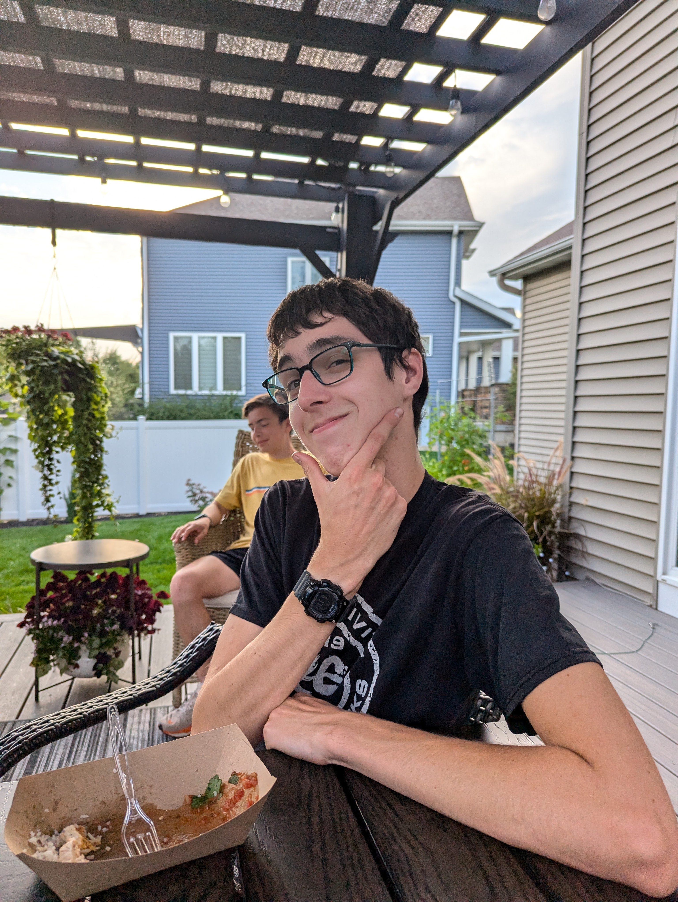
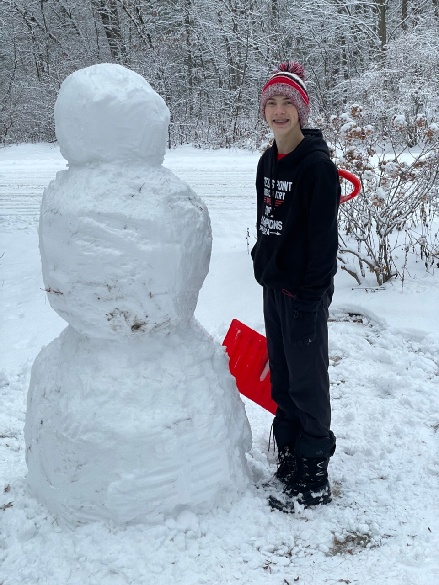

Tyce Xiong

Tyce Xiong running the SPASH XC Intrasquad Meet with the Wacky Racer's jersey.
Spreading the Dog has required many people to contribute their time, money, and effort to the cause. This is a list of some of the most influencial people who have been involved in this movement.
Jerome Kawleski
Jerome Kawleski, the founder of Dog.
Jerome Kawleski was the orginial person to use the Dog graphic. While showing Tyce an evolution chart of the Bulborb characters from Pikmin, he zoomed in randomly. Simply because he found the zoomed in version humerous, he took a screen shot then printed out exactly 30 card sized versions of the image.
Tyce Xiong
Tyce Xiong running the SPASH XC Intrasquad Meet with the Wacky Racer's jersey.
Tyce Xiong was present when Kawleski first printed the photos.
His contributions have included:
- Running races wearing the Dog Jersey.
- Distributing cards.
- He assisting Jerome is distributing the original black and white images that were printed.
- Suggesting and contributing to the production of the first 1500 cards.
- Working with the Wacky Racers to change their mascot to the Dogs.
Samuel Enders
Samuel Enders building a snowman.
Samuel Enders is the next in line to take over the Stevens Point Dog distribution program.
His contributions have included:
- Running races wearing the Dog Jersey.
- Distributing cards.
- Recruiting younger members to the Dog distribution program.
Xavier Gilmeister
Xavier Gilmeister pressing his face against a glass door.
Xavier Gilmeister has assisted in spreading the cards to both middle schools in Stevens Point.
His contributions have included:
- Distributing cards to PJ Jacobs Middle School.
- Delivering cards to an anonymous friend who was able to distribute at Benjamin Franklin Middle School.
- Promoting the silly life style encouraged by the Dog.